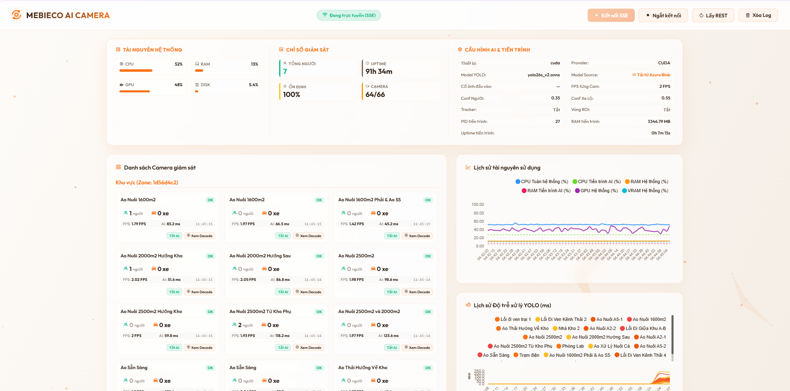
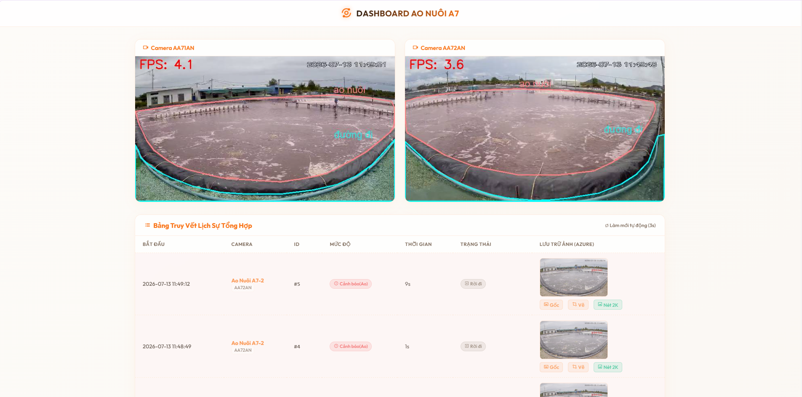

Mebieco Camera AI
Hệ thống theo vết liên tục và nhận diện đối tượng qua góc máy camera không chồng lấp


Chi tiết mô tả & Giải pháp kỹ thuật
Hệ thống Multi-Camera Person Re-identification (ReID) giải quyết bài toán theo dõi và định danh hành trình của một đối tượng duy nhất di chuyển qua nhiều góc quay camera khác nhau, đặc biệt là khi đi qua các điểm mù (blind spots) không có trường nhìn chồng lặp.
Đây là một trong những bài toán phức tạp nhất của Computer Vision do góc chụp, điều kiện ánh sáng, dáng đi và trang phục của đối tượng có thể thay đổi đáng kể khi chuyển giao giữa các máy quay.
Tính năng & Công nghệ
- Deep Learning Core: Sử dụng kiến trúc TransReID (Transformer-based ReID) để trích xuất đặc trưng ngoại hình (feature embeddings) với độ chính xác vượt trội.
- Multi-camera Tracking: Thuật toán so khớp khoảng cách vector Euclid và cosine giữa ảnh hiện tại và cơ sở dữ liệu vector tạm thời (Gallery) trong Redis Cache.
- Multithreading Pipeline: Xây dựng hàng đợi xử lý song song để tránh trễ hình, hiển thị Dashboard trực quan trực tiếp trên luồng video đầu ra.
- Tối ưu hóa: Phân tích luồng xử lý trên nền tảng GPU CUDA, tăng tốc suy luận mô hình giúp hệ thống chạy mượt mà ở độ phân giải Full HD.